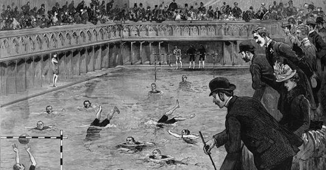

HISTORIA

Foi com o polo aquático que teve início o Projeto Futuro, sonho de dois empresários de
Bauru (SP),
concretizado na criação da Associação Bauruense de Desportes Aquáticos (ABDA), em 2010. O objetivo era usar o
esporte como ferramenta de transformação na vida das crianças, formando cidadãos mais dignos e com perspectiva de
um
futuro promissor. Mas, a origem do polo aquático remonta à Europa do século 18. Inicialmente, era uma forma de
entretenimento praticado principalmente em rios e lagos. O primeiro jogo oficial foi realizado em Londres, no
Crystal Palace Plunge. Em 1900, o polo aquático foi introduzido nos Jogos Olímpicos de Paris, tornando-se a
primeira
modalidade coletiva da história do evento. Porém, a estreia nos Jogos foi apenas na versão masculina. O polo
feminino foi adicionado somente um século depois, em Sidney, 2000.